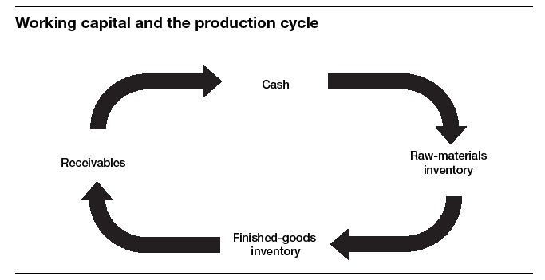

The Magic of Managing the Balance Sheet
We’ve mentioned the phrase managing the balance sheet a couple of times in this book. Right now we want to go into greater detail about how to do it. The reason? Astute management of the balance sheet is like financial magic. It allows a company to improve its financial performance even without boosting sales or lowering costs. Better balance sheet management makes a business more efficient at converting inputs to outputs and ultimately to cash. It speeds up the cash conversion cycle, a concept that we’ll take up later in this part. Companies that can generate more cash in less time have greater freedom of action; they aren’t so dependent on outside investors or lenders.
To be sure, the finance organization in your company is ultimately responsible for managing most of the balance sheet. They’re the ones responsible for figuring out how much to borrow and on what terms, for lining up equity investment when necessary, and for generally keeping an eye on the company’s overall assets and liabilities. But nonfinancial managers have a huge impact on certain key line items from the balance sheet, which taken together are known as working capital. Working capital is a prime arena for the development and application of financial intelligence. Once you grasp the concept, you’ll become a valuable partner to the finance organization and senior managers. Learn to manage working capital better, and you can have a powerful effect on both your company’s profitability and its cash position.
THE ELEMENTS OF WORKING CAPITAL
Working capital is a category of resources that includes cash, inventory, and receivables, minus whatever a company owes in the short term. It comes straight from the balance sheet, and it’s often calculated according to the following formula:
Of course, this equation can be broken down further. Current assets, as we have seen, includes items such as cash, receivables, and inventory. Current liabilities includes payables and other short-term obligations. But these aren’t isolated balance sheet line items; they represent different stages of the production cycle and different forms of working capital.
To understand this, imagine a small manufacturing company. Every production cycle begins with cash, which is the first component of working capital. The company takes the cash and buys some raw materials. That creates raw-materials inventory, a second component of working capital. Then the raw materials are used in production, creating work-in-process inventory and eventually finished-goods inventory, also part of the “inventory” component of working capital. Finally, the company sells the goods to customers, creating receivables, which are the third and last component of working capital (figure 28-1). In a service business, the cycle is similar but simpler. For example, our own company—the Business Literacy Institute—is primarily a training business. Its operating cycle involves the time required to go from the initial development of training materials to completion of training classes and finally to collection of the bill. The more efficient we are in finishing a project and following up on collections, the healthier our profitability and cash flow will be. In fact, the best way to make money in a service business is to provide the service quickly and well, then collect as soon as possible.
. . .
Working Capital
Working capital is the money a company needs to finance its daily operations. Accountants usually measure it by adding up a company’s cash, inventory, and accounts receivable, and then subtracting short-term debts.
. . .
FIGURE 28-1

Throughout this cycle, the form taken by working capital changes. But the amount doesn’t change unless more cash enters the system—for example, from loans or from equity investments.
Of course, if the company buys on credit, then some of the cash remains intact—but a corresponding “payables” line is created on the liabilities side of the balance sheet. So that must be deducted from the three other components to get an accurate picture of the company’s working capital.
MEASURING WORKING CAPITAL
Companies generally look at three main components when measuring working capital: accounts receivable, inventory, and accounts payable. A change in any of these elements either increases or decreases working capital, as follows:
• Accounts receivable is the use of cash to finance customers’ purchases, so an increase in A/R increases working capital.
• Inventory is the use of cash to purchase and stock inventory for sale to customers, so an increase in inventory also increases working capital.
• Accounts payable, though, is money owed to others, so an increase in A/P decreases working capital.
You can use a few of the ratios we’ve already discussed to understand and manage working capital. As you might imagine, these ratios all measure either A/R, inventory, or A/P. Days sales outstanding (DSO), as you might recall, measures the average time it takes to collect sales. So reducing DSO allows a company to reduce working capital. Days in inventory outstanding (DII) is the number of days inventory stays in the system. Since inventory costs money, reducing DII allows you to reduce working capital. By now you’ve probably guessed the third key measure: days payable outstanding, or DPO. If you increase DPO—take longer to pay your bills—you reduce working capital. We’ll discuss managing these elements of working capital in chapters 29 and 30.
Overall, how much working capital is appropriate for a company? This question doesn’t allow an easy answer. Every company needs enough cash and inventory to do its job. The larger it is and the faster it is growing, the more working capital it is likely to need. But the real challenge is to use working capital efficiently. The three working capital accounts that nonfinancial managers can truly affect are accounts receivable, inventory, and (to a lesser extent) accounts payable. We’ll take up each one in turn.
Before we do, though, it’s worth asking once again how much “art” is involved in all these calculations. In this case, the best answer might be “some.” Cash is a hard number, not easily subject to manipulation. Receivables and payables are relatively hard as well. Inventory isn’t quite so hard. Various accounting techniques and assumptions allow a company to value inventory in different ways. So a company’s calculation of working capital will depend to an extent on the rules the company follows. Still, you can generally assume that working capital figures aren’t subject to as much discretion and judgment as many of the numbers we learned about earlier.